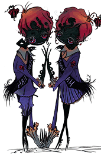
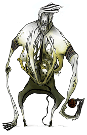
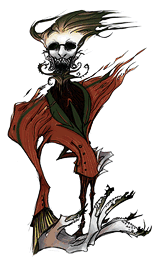

21
|
Criaturas
|
 |
|
La siguiente es la lista de las criaturas encontradas en el juego:
Estudiantes Aunque a Jake le recuerdan algunos de sus compañeros de clase, estas criaturas sombrías muestran muy poca humanidad. Ellos subsisten en las sombras, esperando halar a Jake si se acerca mucho. Son muy inteligentes, o tal vez muy tímidos, para salir de las sombras y atacar a Jake.
Escurridizos Todos han visto cucarachas en la escuela, especialmente en la cafetería, pero esas alimañas nunca fueron tan grandes. Los Escurridizos son cucarachas muy grandes que se esconden cuando la luz las alcanza. A diferencia de los estudiantes, no tienen habilidades de orientación, y a menudo corren derecho a la luz friéndose en el piso en segundos.
Una retorcida variante de una de las profesoras de inglés, esta criatura demanda silencio en su clase y despedazará cualquier cosa que quiera interrumpir sus lecciones. Le gusta su salón oscuro, y cualquier luz la lanza en un desenfreno.
Este custodio parece estar trapeando cualquier luz que se mete a la escuela. Silba una tonada intranquila, y se le ve limpiando cosas en la cafetería escolar. Le parece casi doloroso cuando otra fuente de luz se enciende.
Monitores de los Pasillos Estos chillones, confabuladores, soplones, furtivos, y pequeños monitores de los pasillos siempre están buscando a los que están fuera del salón de clases. Los chicos patrullan mientras las chicas buscan a los estudiantes perezosos. Menos mal que Jake posee un cierto don con las jovencitas.
Entrenador Este profesor de gimnasia grandulón, gritón, y alimentado con testosterona no tolera debiluchos en su clase. Saca pelotas de Dodgeball de su estómago y las lanza a cualquiera de los no invitados. Se necesita más de la luz que da la linterna de Jake para tumbar a este gigantón.
Director El último miembro del profesorado es discreto y vengativo, sentado en su confortable oficinita, tras su cómodo escritorio. Cualquier atento hecho por Jake va a ser deshecho casi tan pronto como Jake lo hace. Jake tiene que actuar rápido y usar los objetos tan ampliamente como sea posible para poder derrotar a esta criatura. |
 Profesora
de Inglés
Profesora
de Inglés Aseador
Aseador |
 |
 |